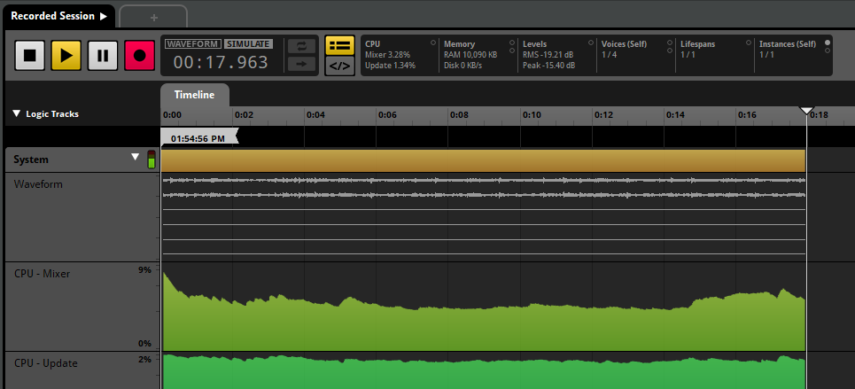
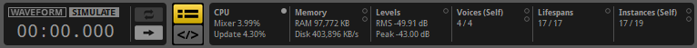
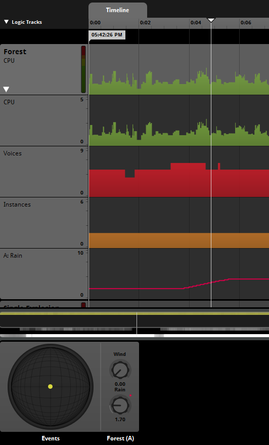
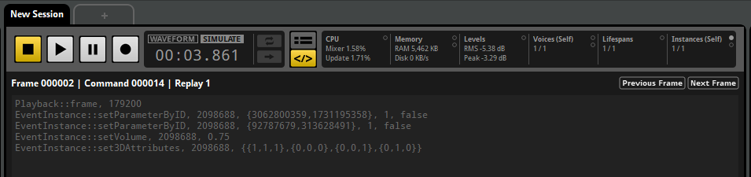
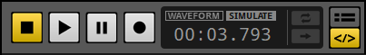
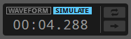
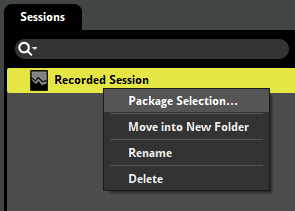

FMOD Studio User Manual 2.00
FMOD Studio's profiler allows you to assess the performance and output of your project's events, mix, and snapshots. You can profile locally within FMOD Studio, or connect to a game via live update to profile it at runtime.
You can open the profiler window by clicking "Window > Profiler".
To connect to your game with live update your game's code must set the FMOD_STUDIO_INIT_LIVEUPDATE flag when calling Studio::System::initialize, and you must connect to the game over the network using FMOD Studio.
For more information about the FMOD_STUDIO_INIT_LIVEUPDATE flag, see Studio::System::initialize and FMOD_STUDIO_INITFLAGS in the FMOD API Documentation.
When using the FMOD Unity integration, live update is automatically enabled by default. To check this, select "Edit Settings" from the "FMOD" menu in your Unity project.
By default, live update will be set to enabled for "Play in Editor" and disabled for built games. A text box underneath these settings will inform you what port is being used.
Starting your game or beginning in the "Play in Editor" mode will send information over the specified port.
When using the FMOD Unreal Engine 4 integration, live update is automatically enabled by default. To check this, select "Edit > Project Settings" in your Unreal Engine 4 project, and look in the "FMOD Studio" section in "Plugins".
Live update will be set to enabled for all non-final builds by default. You can specify a port number in the "Live Update Port" option under the "Advanced" settings.
Starting your game or beginning in the "Play in Editor" mode will send information over the specified port.
When using the FMOD Studio API, you can enable live update by using FMOD_STUDIO_INIT_LIVEUPDATE when initializing the FMOD Studio system.
By default, the FMOD Studio API uses port 9264 for live update, however you can override the default port by setting the FMOD_ADVANCEDSETTINGS.profilePort using System::setAdvancedSettings.
After correctly initializing and starting your game, open your FMOD Studio project and select "File > Connect to Game". The dialog prompts for an IP address for connecting to the machine where the game is running. This field supports the following formats:
localhostlocalhost:(port number)127.0.0.1127.0.0.1:(port number)
The term localhost can be used to refer to the machine that the FMOD Studio tool is running on.
If no port number is specified, the default port (9264) will be used. The port number must match the port number specified in game.
Once you are connected to your game, you will see a green "Live Update On" icon at the right of the status bar.
To record a new session right click in an empty space of the sessions browser and select "New Session". This creates a new blank session. Click on the "Record" button in the transport controls, represented by a circle, to begin recording. If you do not have a session actively selected in the sessions browser, clicking "Record" automatically creates a new session.
You shall see a system track generated, expanded to show waveform data and other graphs, and a master track.

Once you have finished capturing data, press the "Stop" button in the transport bar.
By default, a track for each recorded event will automatically be added to the session once the recording is completed. You can display mixer tracks or event tracks by dragging and dropping them into the profiler session's editor pane.
You can change when event tracks are added to a recorded profiler session by enabling "Automatically add event tracks to profiler sessions" in the interface tab of the preferences dialog. You can select whether event tracks are added while recording, after recording, or only when explicitly added.
It is possible to record FMOD Studio auditioning events, sandbox sessions, and profiling already recorded profiler sessions. These are useful to analyze the performance of your project or for comparing changes made to your project within the exact same environment as a previously recorded session.
While an event is playing in the event editor or while a sandbox session is currently in play, click the record button in a profiler window.
Select a profiler session to record ("Tab 1") and open a new tab in the profiler session's editor pane by clicking "View > New Tab" ("Tab 2"). You can then play the recorded profiler ("Tab 1") in simulate mode and record its playback using the new tab ("Tab 2").
Once you have a recorded session, you can play it back as you would with an event, and hear your game's recorded output. Areas that show instantaneous values (such as the transport bar and 3D View) correspond to the playhead position. You can also use loop regions to repeat parts of the recording.
Each event or bus in the profiler displays a graph for a recorded metric. You can switch which metric of that event or bus is graphed by clicking on the categories of the master profiling statistics in the transport controls.

You can hover over graphs to see the value at a particular point.
The graphs available in the profiler are:
Waveform: Displays the waveform of the recorded session.
CPU: CPU numbers do not include time spent calling update() from your game thread (which theoretically should be quite small). FMOD Studio also uses some other smaller worker threads (e.g. File I/O thread) which aren't included in these numbers.
CPU - Mixer (%): Indicates the percentage of time the mixer thread is taking. The percentage represents how long it takes, in relation to the amount of time it has to complete a mix. For example, on XBox One where a mix block is 10ms (512 samples), 50% usage represents the mixer thread taking 5ms to complete.
CPU - Update (%): Indicates the percentage of time the Studio update thread takes to complete. The update thread typically runs every 20ms in its own thread, so the percentage indicates how much of the 20ms is used up.
Memory (KB): Only available on the system track. Displays the RAM in use by the system.
Levels (dB): Indicates how loud the output of that event or bus is in dB. The lines represent the peak value and the solid colors represent the RMS (Root Mean Square).
File I/O (KB): Only available on the system track. Displays the file I/O used for sample data, stream data, and bank metadata loading.
Voices: Available for "Self" and "Total". Displays how many voices are spawned. The transparent background graph represents voices and virtual voices.
Instances: Available for "Self" and "Total". Displays how many instances of events are spawned. The transparent background graph represents instances and virtual instances. The event instance lifetime view has indicators for when event instances are waiting for sample data to load in.
For "Voices" and "Instances", you can choose to show either self or total. Self refers to voices or instances that are spawned only from that event. Total refers to voices or instances that are also spawned from nested or references events.
You can see a summary of the active graph type for the entire session in the birds eye view.
At the top of the overview section is a 3D view of the entire session, displaying all event instances and where they spawned in relation to the player. Playing event instances are shown as filled circles, while virtual events are hollow circles. Stopped event instances become dimmer and fade over time, which assists with finding short-lived event instances. Once an event instance has been released it is removed from the 3D view.
The 3D preview represents a top-down view of a spherical area surrounding the listener. The radius of this circle is fixed to 60 meters. The listener is always located at the exact center of the circle, facing forward ('up' on the 3D preview).
Underneath the 3D View is a list of all the snapshot activities instantiated. Once a snapshot has started it will appear in this list. The percentage to the right of the name of the snapshot indicates the intensity of the snapshot. The background of the name will also display how much intensity is being applied at that moment in time. Once a snapshot has been released it will be removed from this list.
You can view the snapshot's mixer view by right clicking on any snapshot in this list and choosing "Open in Mixer".
You can add tags and notes for each profiler session in this section.
The profiler provides additional information about each event instance.
Clicking on an event in this view highlights its associated track and also presents a secondary 3D view in the deck which shows only events of a given type.
If an event instance is selected, the deck displays that instance's parameter values over time. Right clicking a parameter dial allows you to add a graph for that particular event instance's parameter. This is added as a subgraph in the multitrack view.

All session captures also capture the API calls made by your FMOD Studio project.
To view the API calls being made, click on the API View button located next to the time indicator.

The API calls view displays the FMOD Studio API functions being called between each Studio::System::update, known as a frame. To move between frames, click on the "Previous Frame" or "Next Frame" buttons located at the top right of the API calls view.
The captured API calls are not written in any particular programming language, instead only displaying what FMOD API function was called and the arguments passed into it. All comments are prefixed with a hash (#) and do not affect playback.
Located at the top of the session editor window are two buttons. The track view and the API calls view. For more information about the API calls view, see the playing back a session section of this chapter.
You can choose to play back a profiler session using either the recorded waveform or the recorded API calls. These are known as the waveform playback mode and the simulate playback mode, respectively.
You can toggle between playing back with the recorded audio or with the API capture by clicking on the "Waveform" or "Simulate" button next to the time indicator.

Starting the playback of a profiler session will stop any events currently being auditioned in the event editor.
When the waveform mode is selected, FMOD Studio will playback the audio as it was recorded during the recording session. Any changes made to the project will not be reflected in any later playbacks.
When in simulate mode the playback of the recorded profiler sessions uses the API calls rather than playing back recorded audio. Simulate playback mode does not require banks to be rebuilt after making changes.
This is useful for debugging an audio issue found in a recorded session or making adjustments to events and buses then auditioning them in a real game scenario.

While in simulate mode you can hear events being played as if playing them through the event editor, so random playlists in multi instruments and scatterer instruments have randomized results.
Changes made to the project are updated in real time when in simulate mode so there is no need to rebuild banks.
Profiler recordings are organized into sessions. Profiler sessions can be saved, and later, viewed and compared.
The profiler window's session browser can be used to view previously recorded sessions, create new ones, and organize them into folders for easy access.
You can also export sessions. This is useful for sharing information on any issues encountered either with fellow audio team members or with FMOD Studio support. To do this, right click on a recorded session or folder in the sessions browser and choose "Package Selection".

In this dialog you can choose whether to bundle the audio assets and/or the banks along with the session(s). This can be used to share sessions with others.